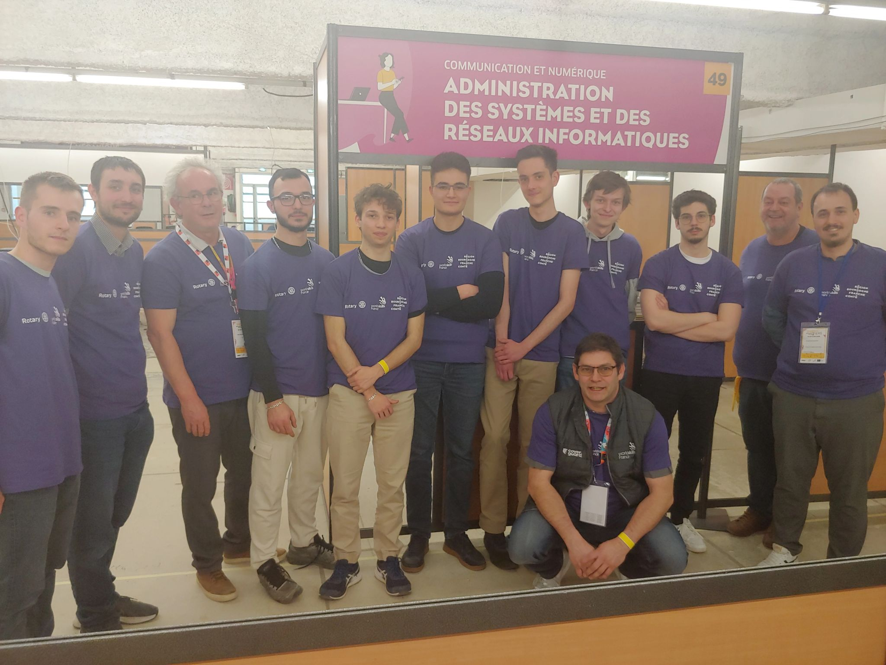
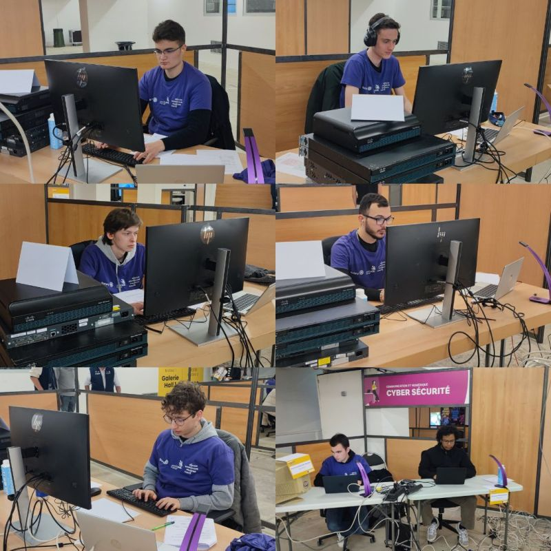
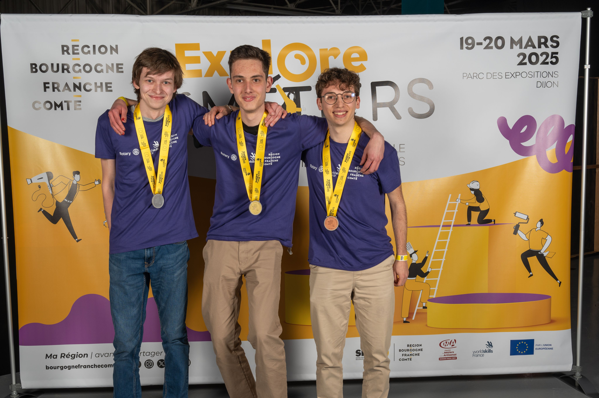

Worldskills Dijon 2025
Oct 13, 2025Les 19 et 20 mars 2025, j’ai eu la chance de participer aux épreuves régionales des Worldskills, anciennement appelées Olympiades des Métiers, qui se déroulaient au Parc des Expositions de Dijon. Cet événement réunit chaque année de jeunes passionnés venus de toute la région pour mettre leurs compétences à l’épreuve dans des métiers très variés.
Pour ma part, j’ai concouru dans la catégorie Administration des Systèmes et Réseaux Informatiques, aux côtés de Ludovic GOUGEON, Étienne PAQUELET, Damien LETALLEUR, Suha KUT, ainsi qu’un étudiant de l’IUT d’Auxerre. Un grand merci également aux enseignants, notamment M. BOUILLET, qui m’a poussé à m’inscrire à la compétition, M. PATTAROZZI et à Alexis CHARTON, ancien étudiant et médaillé d’argent aux épreuves nationales de Caen en 2018, qui nous ont conseillés avant les épreuves et évalués à la fin.
 Crédit photo : Stéphane GIVRON
Pendant deux jours, nous avons enchaîné plusieurs épreuves intenses :
- Administration Linux
- Administration Windows
- Réseau (sur matériel Cisco)
- Résolution de problèmes
Chaque épreuve durait trois heures, et pourtant, le temps filait à une vitesse incroyable ! Les sujets étaient denses - parfois jusqu’à 12 pages chacun - et demandaient une grande concentration. De plus, nous n’avions aucun accès à Internet, donc pas de documentation, d’exemples ou de ChatGPT ;). À cela s’ajoutait un environnement particulier : la compétition se déroulait en plein cœur du forum des métiers, entourée de stands, de visiteurs (dont des lycéens/collégiens), et d’un brouhaha constant.
Le deuxième jour, pendant que nous étions en épreuves, les épreuves de la catégorie Cybersécurité commençaient, avec Paul-Émile NGUYEN-TAN-HON et Nantenaina RANDRIANASOLO.
 Crédit photo : IUT Nord Franche-Comté
Cette édition a également renforcé la “tradition” du département depuis 2012 : le champion régional vient du département, et cette fois, le podium entier est de notre IUT !
🥇 Ludovic GOUGEON, qualifié pour les épreuves nationales à Marseille
🥈 Moi-même, à la deuxième place
🥉 Étienne PAQUELET, en troisième position
 Crédit photo : Région Bourgogne-Franche-Comté
En Cybersécurité, Paul-Émile et Nantenaina ont décroché la médaille de bronze🥉.
Au-delà du résultat, cette expérience a été extrêmement enrichissante. J’y ai appris à gérer mon stress, à travailler efficacement sous pression, et surtout à repousser mes limites. Participer aux Worldskills m’a aussi permis de mesurer concrètement le niveau d’exigence attendu dans le monde professionnel et de renforcer ma passion pour l’administration réseau.
En résumé : deux jours intenses, un challenge technique passionnant, et une belle fierté de représenter notre département sur le podium !
 Crédit photo : Paul-Émile NGUYEN-TAN-HON
Crédit photo : Paul-Émile NGUYEN-TAN-HON